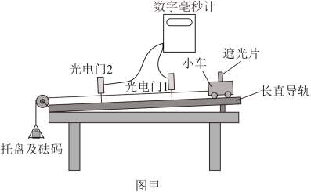
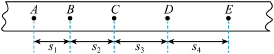

研究匀变速直线运动
纸带 · 逐差法

图甲：研究匀变速直线运动装置（电磁打点计时器 + 小车 + 砝码盘 + 光电门测速）
实验原理
核心原理：打点计时器每 0.02 s 打一个点（电源频率 50 Hz）；图甲中托盘及砝码拖动小车沿长直导轨运动，电磁打点计时器在纸带上打点，纸带记录小车运动信息。
瞬时速度：某点速度 ≈ 包含该点前后相邻两段位移的平均速度，vn = (xn+xn+1)/(2T)。
加速度（逐差法 / 充分利用数据）：把偶数段位移前后对半分，a = [(x₄+x₅+x₆)−(x₁+x₂+x₃)] / (9T²)，可充分利用所有数据、减小偶然误差。
逐差法一般式（n 段位移）：把 n 段位移均分为前后两组（每组 n/2 段），再对两组的段和作差：a = (s后 − s前) / ( (n/2)2 T2 )。例如 4 段位移 s₁,s₂,s₃,s₄：a = (s₃+s₄ − s₁−s₂) / (4T2)。
计数点时间 T：若相邻计数点间还有 k 个点未画出，则 T = (k+1)·0.02 s。题目"每相邻两个计数点间还有 4 个点" → k=4 → T = 5·0.02 = 0.1 s。
有效数字：结果保留 2 位有效数字 → a ≈ 0.51 m/s²。
替代方案：用图甲中的光电门 1、光电门 2 与遮光片可测小车的瞬时速度：v = d/Δt（d 为遮光片宽度，Δt 为挡光时间）。
瞬时速度：某点速度 ≈ 包含该点前后相邻两段位移的平均速度，vn = (xn+xn+1)/(2T)。
加速度（逐差法 / 充分利用数据）：把偶数段位移前后对半分，a = [(x₄+x₅+x₆)−(x₁+x₂+x₃)] / (9T²)，可充分利用所有数据、减小偶然误差。
逐差法一般式（n 段位移）：把 n 段位移均分为前后两组（每组 n/2 段），再对两组的段和作差：a = (s后 − s前) / ( (n/2)2 T2 )。例如 4 段位移 s₁,s₂,s₃,s₄：a = (s₃+s₄ − s₁−s₂) / (4T2)。
计数点时间 T：若相邻计数点间还有 k 个点未画出，则 T = (k+1)·0.02 s。题目"每相邻两个计数点间还有 4 个点" → k=4 → T = 5·0.02 = 0.1 s。
有效数字：结果保留 2 位有效数字 → a ≈ 0.51 m/s²。
替代方案：用图甲中的光电门 1、光电门 2 与遮光片可测小车的瞬时速度：v = d/Δt（d 为遮光片宽度，Δt 为挡光时间）。
闯关练习

图乙：纸带上的计数点 A,B,C,D,E 与相邻位移 s₁,s₂,s₃,s₄（相邻计数点间还有 4 个点未画出）
高考真题
（2023·全国甲）某同学用打点计时器探究小车匀变速运动，得到一条纸带，相邻计数点间还有 4 个点未画出（T=0.1 s）。测得 x₁=2.62 cm，x₂=3.01 cm，x₃=3.40 cm，x₄=3.79 cm，x₅=4.18 cm，x₆=4.57 cm。
求：(1) 小车的加速度 a；(2) 打计数点 3 时小车的速度 v₃。
答案：(1) a=[(x₄+x₅+x₆)−(x₁+x₂+x₃)]/(9T²)=[(3.79+4.18+4.57)−(2.62+3.01+3.40)]/(9×0.01)≈0.396 m/s²；(2) v₃=(x₃+x₄)/(2T)=(0.0340+0.0379)/(0.2)≈0.36 m/s。